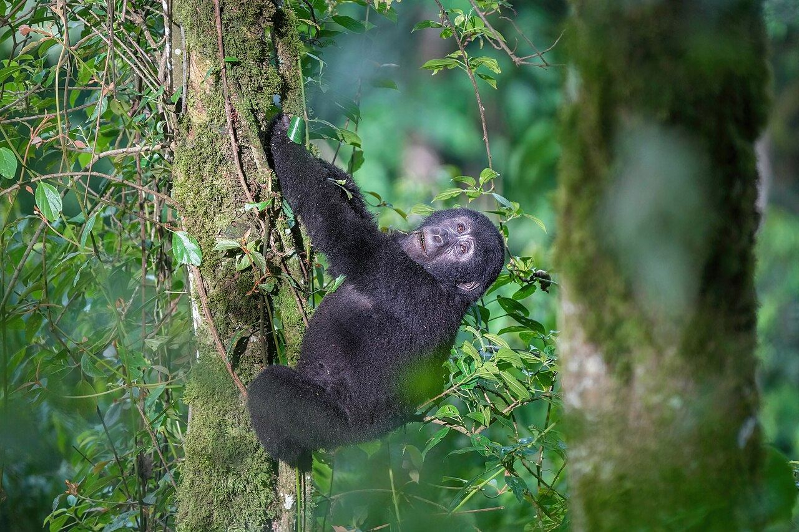

Doneer
Help het wild terug te komen
Je gift gaat naar het werk ter plekke: rangers uit de buurt, scholen, vergoedingen voor boeren en herstel van leefgebied.

Dank je wel
Doneer
Je gift gaat naar het werk ter plekke: rangers uit de buurt, scholen, vergoedingen voor boeren en herstel van leefgebied.

Dank je wel